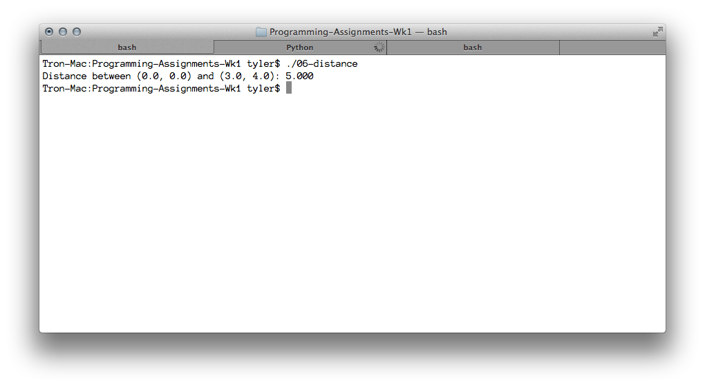

---

layout: default
title: 06-distance

---

{% highlight c++ %}
// Tyler Mumford
// Write and test a function that computes the distance between two points in 2D.

#include <stdio.h>
#include <math.h>

typedef struct {
	double x, y;
} Point;

double disanceBetween (Point, Point);

int main () {
	Point first = {0,0}, second = {3,4};

	printf("Distance between (%.1f, %.1f) and (%.1f, %.1f): %.3f\n", first.x, first.y, second.x, second.y, disanceBetween(first, second));
	return 0;
}

double disanceBetween (Point a, Point b) {
	return sqrt( pow((b.x - a.x), 2.0) + pow((b.y - a.y), 2.0));
}
{% endhighlight %}


